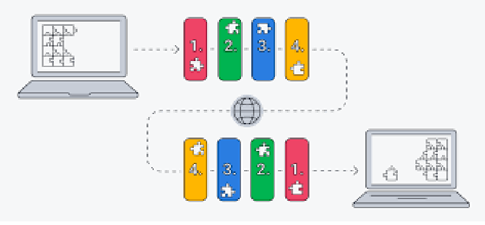

El TCP/IP utiliza un protocolo de enlace de tres vías para establecer una conexión entre un dispositivo y un servidor, lo que garantiza que se puedan transferir múltiples conexiones de socket TCP en ambas direcciones simultáneamente. Tanto el dispositivo como el servidor deben sincronizar y aceptar los paquetes antes de que comience la comunicación, y así entonces pueden negociar, separar y transferir las conexiones de socket TCP
El Protocolo de control de transmisión (Transmission Control Protocol, TCP) es un estándar de comunicaciones que permite que los programas de aplicaciones y dispositivos informáticos intercambien mensajes a través de una red. Está diseñado para enviar paquetes a través de Internet y garantizar la entrega exitosa de datos y mensajes a través de redes
¿Qué es el PI?El Protocolo de Internet (Internet Protocol, IP) es el método para enviar datos de un dispositivo a otro a través de Internet. Cada dispositivo tiene una dirección IP que lo identifica de manera única y le permite comunicarse e intercambiar datos con otros dispositivos conectados a Internet.
